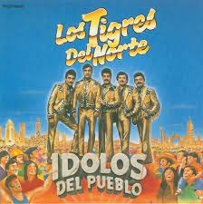

La historia de Los Tigres del Norte se inicia en Rosa Morada, sindicatura del municipio de Mocorito, estado de Sinaloa, México, en el año 1968, cuando Jorge, el mayor de la familia Hernández Angulo, convence a sus hermanos Raúl, Hernán y a su primo Óscar para formar un grupo.
Sus primeros trabajos los encuentran en la cercana ciudad de Los Mochis, Sinaloa, donde tocaban en restaurantes. Un día, cuando ya Jorge contaba 22 años, son contratados para tocar en San José, California. Al cruzar la frontera, un agente de inmigración les preguntó por el nombre del grupo, el cual aún no existía; el oficial, al verlos tan jovencitos, los llamó: little tigers ("tigrillos"), pero luego les dijo que crecerían, así que los bautizó como Los Tigres del Norte.
Su primer disco fue conocido como “Juana La traicionera” / “Por el amor a mis hijos”. Pero el éxito no llegó repentinamente. Grabaron cuatro discos sin mayor repercusión; antes de grabar el quinto, en el año 1973, «Contrabando y traición», que los llevaría a la fama. A lo largo de los años, se han ido y agregando varios integrantes, entre el saxofonista Guadalupe Olivo, Eduardo, Raúl y Luis, su hermano menor.
Durante sus más de 44 años de carrera han grabado más de 55 álbumes, con más de 700 canciones, han vendido más de 30 millones de copias, con 140 discos de platino, 135 de oro y 1 de diamante. Además, han participado en más de 16 películas, han sido nominados 15 veces a los premios Grammy, que ganaron en 1987 por su grabación América sin fronteras, y han participado con distintos músicos de muy variados géneros, tal como es el caso en 2002, donde colaboraron junto con Jaguares en la grabación del tema Detrás de los cerros, para su álbum El primer instinto. En 1993 lograron un récord de asistencia cuando lograron congregar a más de 200 000 personas en un concierto realizado en la Arena Deportiva de Los Ángeles.
Paralelo a sus actividades musicales, el grupo creó la Fundación Los Tigres del Norte, cuyas oficinas centrales están en el campus de la Universidad de California en Los Ángeles, destinada a contribuir en la conservación y la defensa de la herencia y tradición mexicana en los Estados Unidos. Por su labor social han sido merecedores a premios diversos.

Álbum: Idolos Del pueblo
Artista: Los Tigres Del Norte
Año: 1988
Tipo: Disco de estudio